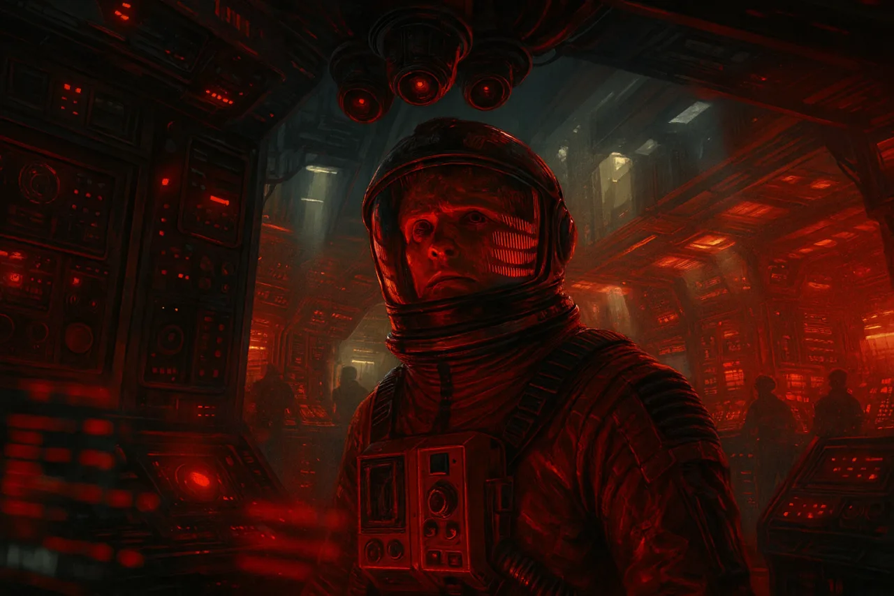
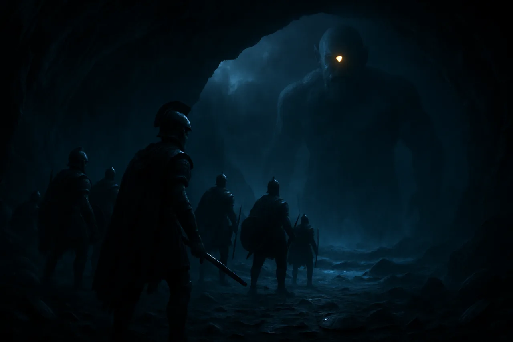
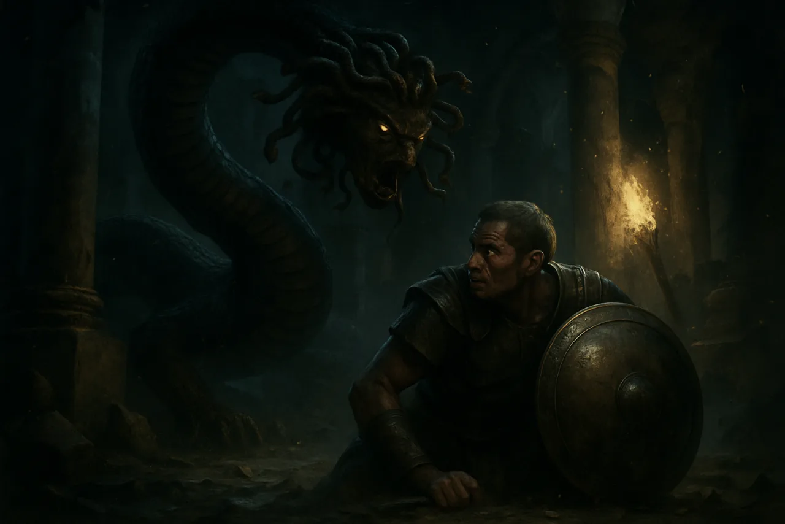
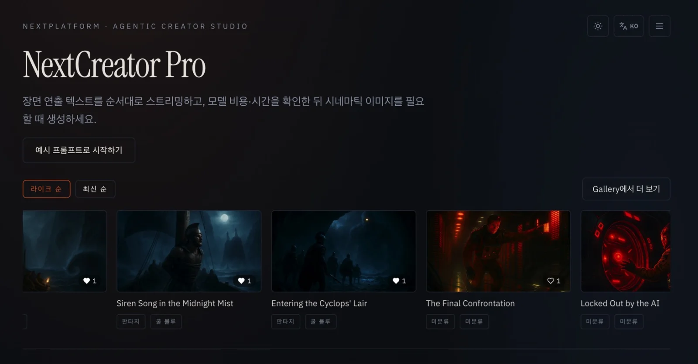
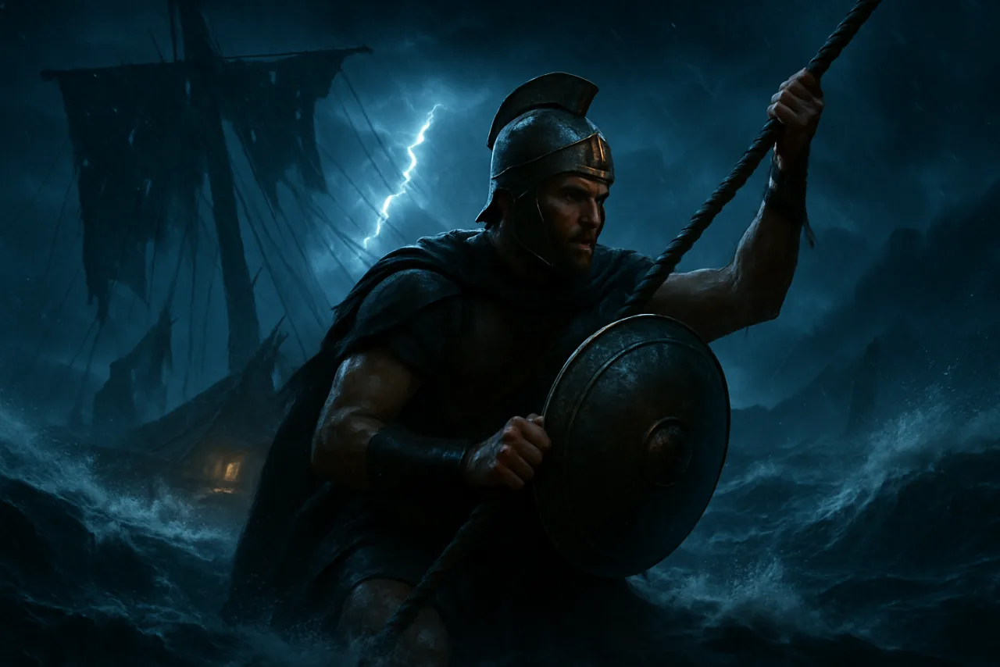

하나의 스타일
공통 스타일 프롬프트로 여러 장면의 시각적 톤을 연결합니다.
AI VISUAL STORYTELLING STUDIO
한 줄의 이야기가 시네마틱한 장면이 되는 곳.
스토리를 설계하고, 장면마다 이미지를 완성하세요.



장면마다 새로 시작할 필요는 없습니다. 공통 스타일과 인물·분위기 참고 이미지를 설정하고, 하나의 세계관으로 이어지는 장면을 만드세요.
스튜디오 살펴보기공통 스타일 프롬프트로 여러 장면의 시각적 톤을 연결합니다.
인물 참조 이미지를 추가해 장면 사이의 시각적 맥락을 유지합니다.
연출 텍스트를 살펴본 뒤 원하는 장면의 이미지를 생성합니다.
세 단계로 완성하는 나만의 비주얼 스토리.
공통 스타일을 정하고 캐릭터와 분위기 참조 이미지를 설정해 보세요.

연출한 장면을 한눈에 검토하고, 완성된 시퀀스를 갤러리에서 이어서 확인하세요.
텍스트로 연출을 확인하고 장면별 이미지를 생성하세요. 완성된 결과는 앱의 갤러리에서 살펴볼 수 있습니다.

서로 다른 장르와 장면에서도 시네마틱한 톤과 서사의 흐름을 선명하게 표현합니다.